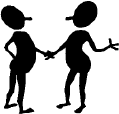

<!DOCTYPE HTML PUBLIC "-//W3C//DTD HTML 3.2//EN">
<html xmlns:mso="urn:schemas-microsoft-com:office:office" xmlns:msdt="uuid:C2F41010-65B3-11d1-A29F-00AA00C14882">


<!-- Mirrored from sfhelp.org/relate/news/respect.htm by HTTrack Website Copier/3.x [XR&CO'2014], Tue, 23 Apr 2019 19:06:21 GMT -->
<head>
<!--[if gte mso 9]><xml>
<mso:CustomDocumentProperties>
<mso:Categories msdt:dt="string">marriage;relationships;reprint</mso:Categories><mso:Approval_x0020_Level msdt:dt="string"></mso:Approval_x0020_Level><mso:Assigned_x0020_To msdt:dt="string"></mso:Assigned_x0020_To></mso:CustomDocumentProperties></xml>
<![endif]-->
<title>"Respect - the Heart of Every Successful Marriage," by Annie Gottlieb</title>
<meta http-equiv="Content-Type" content="text/html; charset=windows-1252">
<meta name="Author" content="Peter K. Gerlach, MSW">
<meta name="Classification" content="health, family, relationships, communication skills, parenting">
<meta name="description" content="Article: &quot;Respect: the Heart of Every Successful Marriage,&quot; by Annie Gottlieb">
<meta name="keywords" content="relationship, marriage, remarriage, self esteem, self confidence, self respect, self love, respect, disrespect, put-downs, contempt, scorn, Annie Gottlieb, Francine Klagsbrun, Peter Gerlach">
<meta name="robots" content="all">
<script language="javascript"></script>
<style type="text/css" name="J-BotStyle" ID="J-BotStyle" >
<!--
.popup       {  }
.Popup		{}
a { text-decoration: none; }.Popup		{}
 -->
</style>
<base target="_blank">
</head>

<body TEXT="#000000" BGCOLOR="#D1D1D1" LINK="#0000EE" VLINK="#551A8B" ALINK="#FF0000">
<div align="center">
	<table border="0" style="border-collapse: collapse" width="770" id="table1" bgcolor="#FFFFFF">
		<tr>
			<td>
<center>

&nbsp;<table cellspacing="0" cellpadding="0" border="0" style="border-collapse: collapse" bordercolor="#111111" width="404" id="table2">
  <tr>
    <th COLSPAN="2" bgcolor="#FFFFFF">
      <p align="center">
		<!--webbot bot="FLOATWIN" WIP="yes" startspan Preview="" s-wudll="popup.dll" i-bordersize="0" u-imageurl="../../art/hdr-cycle.gif" clientside s-windowname="cycle" i-type="2" b-center="1" tag="p" s-imagealt="" i-rotate="0" s-class="floatwin" u-windowurl="../../pop/cycle.htm" i-top="0" i-width="460" b-resizable="1" i-height="540" i-left="0" -->

<script language=javascript><!--
// Webs Unlimited's J-BOTS FrontPage 2004 JavaScript Generator version 4.0
// Copyright Webs Unlimited 1998, 1999, 2000, 2001, 2002, 2003, 2004 All rights reserved - http://WebsUnlimited.com
cycle_handle = new Object;
cycle_ID = 0;

function cycle(page,w,h,t,l) {
if(parseInt(navigator.appVersion) >= 4){
  	l = (screen.width - w) / 2;
  	t = (screen.height - h) / 2;
  }
  var loc = 'width=' + w + ',height=' + h + ',top=' + t + ',left=' + l;
  cycle_handle = window.open(page,"cycle",",,,,,,resizable," + loc);
if(parseInt(navigator.appVersion) >= 4){cycle_handle.window.focus();}
}
//--></script><a class="Popup" href="../../pop/cycle.html" onclick="cycle(this.href,460,540,0,0); return false;" ></a><!--webbot bot="FLOATWIN" endspan --></p>
    </th>
  </tr>
  <tr>
    <td COLSPAN="2" width="404" height="40" style="font-weight: normal" bgcolor="#CCFFFF">
      <p align="center"><i><font face="Arial" style="font-size: 11pt"><b>
		<!--webbot bot="FLOATWIN" WIP="yes" startspan Preview="<a class=&quot;Popup&quot; href=#>Lesson 4 of 7</a>" s-wudll="popup.dll" i-bordersize="0" s-windowname="course" i-type="1" b-center="1" tag="p" i-rotate="0" s-class="floatwin" u-windowurl="../../pop/course.htm" clientside i-top="0" i-width="470" b-resizable="1" i-height="470" i-left="0" s-hyperlink="Lesson 4 of 7" -->
<script language=javascript><!--
// Webs Unlimited's J-BOTS FrontPage 2004 JavaScript Generator version 4.0
// Copyright Webs Unlimited 1998, 1999, 2000, 2001, 2002, 2003, 2004 All rights reserved - http://WebsUnlimited.com
course_handle = new Object;
course_ID = 0;

function course(page,w,h,t,l) {
if(parseInt(navigator.appVersion) >= 4){
  	l = (screen.width - w) / 2;
  	t = (screen.height - h) / 2;
  }
  var loc = 'width=' + w + ',height=' + h + ',top=' + t + ',left=' + l;
  course_handle = window.open(page,"course",",,,,,,resizable," + loc);
if(parseInt(navigator.appVersion) >= 4){course_handle.window.focus();}
}
//--></script><a class="Popup" href="../../pop/course.html" onclick="course(this.href,470,470,0,0); return false;" >Lesson 4 of 7</a><!--webbot bot="FLOATWIN" endspan -->
		</b>&nbsp;- optimize your relationships</font></i></td>
  </tr>
  <tr>
    <td width="154">
    <p align="center">
    </p>
    </td>
    <td ALIGN="CENTER" VALIGN="middle" width="250">
	<p style="margin-top: 9px; margin-bottom: 6px">
	<font face="Arial">
    <b><span style="background-color: #FEFDD6">Respect</span>: The Heart of<br>
	Every Successful Marriage</b><o:p>
      </o:p>
      </font>
      </p>
      <p style="margin-top: 8px; margin-bottom: 6px"><b><font face="Arial" style="font-size: 11pt">By Annie Gottlieb</font></b></p>
      <p style="margin-top: 8px; margin-bottom: 0">
		<font face="Arial" style="font-size: 11pt">From the
      Reader’s Digest<span style="mso-bidi-font-family: Arial">,<br>
		April 1988</span></font></td>
  </tr>
</table>
</center>

<p align="center"><font face="Arial" size="2">
</font></p>
<blockquote>
	<ul>
		<li>
		<p align="left"><font face="Arial" style="font-size: 11pt"><i>
		<a href="../../site/intro.html"><u>site 
	intro</u></a> &gt; 
	<a href="../../site/course.html"><u>course outline</u></a> &gt; Lesson 4
		<a href="../guide4.html"><u>study guide</u></a> or 
		<a href="../links4.html"><u>links</u></a> 
	&gt; 
	<a href="../../site/search.html"><u>site search</u></a>,
		<a href="https://www.facebook.com/groups/846121198782230/">
		<u>chat</u></a>, or  
		<a target="_parent" href="javascript:history.back(1)"><u>prior page</u></a> &gt; here 
	&nbsp;</i></font></li>
	</ul>
</blockquote>
<ul>
	<blockquote>
		<blockquote>
			<p align="center"><font face="Arial" style="font-size: 11pt">
			 The Web 
	address of this reprint is <u>http://sfhelp.org/relate/mates/respect.htm</u></font></p>
			<span style="mso-bidi-font-family:Arial">
			<p align="center"><font face="Arial"><span style="font-size: 11pt">Updated
			02-24-2015</span></font></p>
			</span>
		</blockquote>
	</blockquote>
</ul>
<blockquote>
	<blockquote>
		<p align="left"><font face="Arial" style="font-size: 11pt">&nbsp;&nbsp;&nbsp;&nbsp;&nbsp; 
						<span style="background-color: #FFFFFF">Clicking <u>underlined links</u> here will open a 
		new window</span>. Other links will open&nbsp; an informational popup, 
		so please turn off your 
		browser's popup blocker or allow popups from this nonprofit Web site.
		If your playback device doesn't support Javascript, the popups may not display.
						<span style="background-color: #FFFF99">Follow underlined links 
						<u> 
						<i>after</i></u> 
		finishing this article</span> to avoid getting lost.</font></p>
		<p><font face="Arial" style="font-size: 11pt">&nbsp;&nbsp;&nbsp;&nbsp;&nbsp;
    	<b>This is </b>a thoughtful article on the importance of a mutually-respectful attitude between 
		committed mates. The hilights below are mine.  
		This two-part YouTube video offers perspective on growing <u>self</u> respect:</font></p>
		<p align="center"><font face="Arial" style="font-size: 11pt"><iframe width="560" height="315" src="https://www.youtube.com/embed/-WoLQ7a91C8" frameborder="0" allowfullscreen></iframe></font></p>
		<p><font face="Arial" style="font-size: 11pt">&nbsp;&nbsp;&nbsp;&nbsp;&nbsp; See my comments after the 
		article. - 
		<i>Peter Gerlach, MSW</i></font></p>
		<p align="center"><font face="Arial" style="font-size: 11pt">+ + +</font></p>
	</blockquote>
	<ul>
		<p><font face="Arial" style="font-size: 11pt">
		&nbsp;&nbsp;</font><span
    style="mso-bidi-font-family:Arial"><font face="Arial" style="font-size: 11pt"><b><u><span style="background-color: #FEFDD6">Respect</span>:
    The Heart of Every Successful Marriage</u></b></font></span></p>
		<p align="center">
		<p<i><span style="mso-bidi-font-family:Arial"><i>
		<font
      face="Arial" style="font-size: 11pt">It is the quality that transcends romance and
      admiration, 
		<font
      face="Arial" size="2">
		<o:p></o:p></font><br>that becomes the bedrock of a lasting partnership.<o:p>
		</o:p></font></i>
	</ul>
	<blockquote>
		<p><font face="Arial" style="font-size: 11pt">&nbsp;&nbsp;&nbsp;&nbsp;&nbsp; Respect is not included in the marriage vows. No illustrated books show
      how to achieve it. And yet it is central to a lasting, satisfying
      marriage.<o:p> </o:p></font></p>
		<p><font face="Arial" style="font-size: 11pt">&nbsp;&nbsp;&nbsp;&nbsp;&nbsp; Yes, respect. It seems a quaint, almost formal, word today. But it's a
      feeling that successfully married couples mention with impressive
      consistency.<o:p> </o:p></font></p>
		<p><font face="Arial" style="font-size: 11pt">&nbsp;&nbsp;&nbsp;&nbsp;&nbsp; For her book 
      	<u>Married People: Staying Together in the Age of Divorce</u>
      (Bantam), author Francine Klagsbrun interviewed 87 couples who had been
      married 15 years or more. She hoped to identify the factors that had
      enabled these marriages to survive and thrive in a time when almost half
      are expected to end in divorce. <span style="background-color: #FFFF99">Respect turned out to be a key ingredient.</span>
		<span style="background-color: #F5F5F5">&quot;The vast majority of people I 
		interviewed said, 'I respect him' or 'l respect her,</span>&quot; says Klagsbrun.<o:p>
		</o:p></font></p>
		<p><font face="Arial" style="font-size: 11pt">&nbsp;&nbsp;&nbsp;&nbsp;&nbsp; What is this thing called respect? It is not the same as admiration.
      &quot;When you fall in love, you admire the other,&quot; says Dr.
      Alexandra Symonds, associate clinical professor of psychiatry at the New
      York University School of Medicine. &quot;You look up to someone - much
      the way a child idealizes a parent.&quot;<o:p> </o:p></font></p>
		<p><font face="Arial" style="font-size: 11pt">&nbsp;&nbsp;&nbsp;&nbsp;&nbsp; Such romantic admiration thrives and even depends on the illusion that he
      or she is “perfect for you.&quot; That's why it doesn't last. 
		<span style="background-color: #F5F5F5">&quot;</span><span style="background-color: #FFFFCC">You 
		come to see that the person you married isn't exactly what you expected,</span>&quot; says Francine Klagsbrun. &quot;There are differences of
      personality, of approaches to life, different ways of doing
      things.&quot;<o:p> </o:p></font></p>
		<p><font face="Arial" style="font-size: 11pt">&nbsp;&nbsp;&nbsp;&nbsp;&nbsp; You can try to change your mate back into your fantasy. But 
      	<span style="background-color: #FEFFE1">for the
      marriage to last and grow it's better to agree to disagree</span>, to 
		learn to let each other be. Only by taking this path can you begin to develop real respect toward each
      other. For <span style="background-color: #F5F5F5">respect is between peers</span>. It is for something tested and
      proven, solid, really there.<o:p> </o:p></font></p>
		<p><font face="Arial" style="font-size: 11pt">&nbsp;&nbsp;&nbsp;&nbsp;&nbsp; &quot;I have one patient whose husband loves sports, especially tennis,''
      says Dr. Symonds. &quot;She would prefer to go to the theater, or to stay
      home and read. She could simply say, “We have different tastes.”
      Instead, she says, ‘How can he waste his time and money that way?’ She
      puts him down.&quot;<o:p> </o:p></font></p>
		<p><font face="Arial" style="font-size: 11pt">&nbsp;&nbsp;&nbsp;&nbsp;&nbsp;
      	<span style="background-color: #F5F5F5">The put-down is the chief symptom - and weapon - of lack of respect, or
      contempt</span>. &quot;Contempt is the worst kind of emotion,&quot; says Symonds.
      &quot;You feel the other person </font><span style="font-size: 11pt"><!--webbot bot="FLOATWIN" WIP="yes" startspan Preview="<a class=&quot;Popup&quot; href=#>has no worth.&quot; </a>" s-wudll="popup.dll" i-bordersize="0" s-windowname="r_msg" i-type="1" b-center="1" tag="p" i-rotate="0" s-class="floatwin" u-windowurl="../../cx/pop/r_msg.htm" clientside i-top="0" i-width="430" b-resizable="1" i-height="380" i-left="0" s-hyperlink="has no worth." " -->

<script language=javascript><!--
// Webs Unlimited's J-BOTS FrontPage 2004 JavaScript Generator version 4.0
// Copyright Webs Unlimited 1998, 1999, 2000, 2001, 2002, 2003, 2004 All rights reserved - http://WebsUnlimited.com
r_msg_handle = new Object;
r_msg_ID = 0;

function r_msg(page,w,h,t,l) {
if(parseInt(navigator.appVersion) >= 4){
  	l = (screen.width - w) / 2;
  	t = (screen.height - h) / 2;
  }
  var loc = 'width=' + w + ',height=' + h + ',top=' + t + ',left=' + l;
  r_msg_handle = window.open(page,"r_msg",",,,,,,resizable," + loc);
if(parseInt(navigator.appVersion) >= 4){r_msg_handle.window.focus();}
}
//--></script><!--webbot bot="FLOATWIN" WIP="yes" startspan Preview="<a class=&quot;Popup&quot; href=#>has no worth.&quot; </a>" s-wudll="popup.dll" i-bordersize="0" s-windowname="r_msg" i-type="1" b-center="1" tag="p" i-rotate="0" s-class="floatwin" u-windowurl="../../cx/pop/r_msg.htm" clientside i-top="0" i-width="430" b-resizable="1" i-height="380" i-left="0" s-hyperlink="has no worth." " -->

<script language=javascript><!--
// Webs Unlimited's J-BOTS FrontPage 2004 JavaScript Generator version 4.0
// Copyright Webs Unlimited 1998, 1999, 2000, 2001, 2002, 2003, 2004 All rights reserved - http://WebsUnlimited.com
r_msg_handle = new Object;
r_msg_ID = 0;

function r_msg(page,w,h,t,l) {
if(parseInt(navigator.appVersion) >= 4){
  	l = (screen.width - w) / 2;
  	t = (screen.height - h) / 2;
  }
  var loc = 'width=' + w + ',height=' + h + ',top=' + t + ',left=' + l;
  r_msg_handle = window.open(page,"r_msg",",,,,,,resizable," + loc);
if(parseInt(navigator.appVersion) >= 4){r_msg_handle.window.focus();}
}
//--></script></span><font face="Arial" style="font-size: 11pt">
		<!--webbot bot="FLOATWIN" WIP="yes" startspan Preview="<a class=&quot;Popup&quot; href=#>has no worth.''</a>" s-wudll="popup.dll" i-bordersize="0" s-windowname="r_msg" i-type="1" b-center="1" tag="p" i-rotate="0" s-class="floatwin" u-windowurl="../../cx/pop/r_msg.htm" clientside i-top="0" i-width="430" b-resizable="1" i-height="340" i-left="0" s-hyperlink="has no worth.''" -->
<script language=javascript><!--
// Webs Unlimited's J-BOTS FrontPage 2004 JavaScript Generator version 4.0
// Copyright Webs Unlimited 1998, 1999, 2000, 2001, 2002, 2003, 2004 All rights reserved - http://WebsUnlimited.com
r_msg_handle = new Object;
r_msg_ID = 0;

function r_msg(page,w,h,t,l) {
if(parseInt(navigator.appVersion) >= 4){
  	l = (screen.width - w) / 2;
  	t = (screen.height - h) / 2;
  }
  var loc = 'width=' + w + ',height=' + h + ',top=' + t + ',left=' + l;
  r_msg_handle = window.open(page,"r_msg",",,,,,,resizable," + loc);
if(parseInt(navigator.appVersion) >= 4){r_msg_handle.window.focus();}
}
//--></script><a class="Popup" href="../../cx/pop/r_msg.html" onclick="r_msg(this.href,430,340,0,0); return false;" >has no worth.''</a><!--webbot bot="FLOATWIN" endspan -->
		</font><span style="font-size: 11pt"><!--webbot bot="FLOATWIN" endspan --><!--webbot bot="FLOATWIN" endspan -->
		</span></p>
		<p><font face="Arial" style="font-size: 11pt">&nbsp;&nbsp;&nbsp;&nbsp;&nbsp; We've all seen marriages in which one or both partners attack the other 
		quite savagely in the guise of &quot;It's for your own good.&quot; Any &quot;good&quot; is 
		undone by the hostile tone. A wife nags her husband to be more ambitious 
		and makes him feel like a failure because he prefers craftsmanship or 
		community projects to the competitive business world. Or a husband 
		accuses his wife of wasting time whenever she gets together with
      a friend: &quot;Why isn't she doing something productive?&quot;<o:p> </o:p>
		</font></p>
		<p><font face="Arial" style="font-size: 11pt">&nbsp;&nbsp;&nbsp;&nbsp;&nbsp;
		<span style="background-color: #FFFFCC">In good marriages partners nurture each other's self-esteem</span>. They may
      express humorous incomprehension of one another's preferences, but they
      never make the other person feel like an idiot. &quot;Marty's idea of a
      vacation is to go down to the basement on a sunny day and spend time
      woodworking,&quot; says Dr. Alexandra Symonds of her husband, psychiatrist
      and surgeon Martin Symonds.<o:p> </o:p></font></p>
		<p><font face="Arial" style="font-size: 11pt">&nbsp;&nbsp;&nbsp;&nbsp;&nbsp; But there's fondness in the gibes and firm support for the other's right
      to be himself. Respect is expressed in words like, &quot;I don't want to
      go to the concert, but you have a great time.&quot; And occasionally,
      &quot;Sure, I'll come with you. Just don't be mad if I fall asleep.&quot;<o:p>
		</o:p></font></p>
		<p><font face="Arial" style="font-size: 11pt">&nbsp;&nbsp;&nbsp;&nbsp;&nbsp;
      	<span style="background-color: #FFFFCC">Respect, then, is appreciation of the separateness of the other person</span>, of
      the ways in which he or she is unique. These things take time to discover
      and accept. That's why respect is a quality of maturity in a marriage, not
      of the first heat of romance. But this doesn't mean that married couples
      who respect each other are simply saying, &quot;You go your way, and I'll
      go mine.&quot; On the contrary, <span style="background-color: #F5F5F5">respect is &quot;what pulls you closer
      together,</span>&quot; says Klagsbrun. &quot;<span style="background-color: #F5F5F5">Often it helps you to learn from
      each other</span>, to accept the other's outlook and make it part of
      yourself.&quot;<o:p> </o:p></font></p>
		<p><font face="Arial" style="font-size: 11pt">&nbsp;&nbsp;&nbsp;&nbsp;&nbsp; My husband and I are from different worlds and generations. He is a
      European survivor of World War II, eight years my senior. And sometimes we
      do clash. But we've learned to respect each other even for some of the
      differences that once annoyed us most. As a result, we have grown more
      alike. I've absorbed some of his tendency to take strong stands on issues;
      he's absorbed some of my tolerance of others' points of view. I've gained
      a genuine appreciation for jazz; he can now hear the life in rock 'n roll.<o:p>
		</o:p></font></p>
		<p><font face="Arial" style="font-size: 11pt">&nbsp;&nbsp;&nbsp;&nbsp;&nbsp;
      	<span style="background-color: #F5F5F5">That's the paradox of a good marriage: 
		</span><span style="background-color: #FFFFCC">only by respecting each other 
		<i>as you are</i> do you open the
      door to change</span><span style="background-color: #F5F5F5">.</span> The root meaning of the word 
		<i>respect</i> is &quot;to
      look at.&quot; Respect is a clear yet loving eye. It sees what is really
      there, but it also sees what is potentially there and helps bring it to
      fruition. Respect is the art of love by which married couples honor what
      is unique and best in each other.<o:p> </o:p></font></p>
		<p align="center"><font face="Arial" style="font-size: 11pt">+ + +</font></p>
		<p align="left"><font face="Arial" style="font-size: 11pt"><b>&nbsp;
		<u>Comments</u></b></font><p align="left">
		<font face="Arial" style="font-size: 11pt">&nbsp;&nbsp;&nbsp;&nbsp;&nbsp; 
		This is sound, <i>superficial</i> advice. Most readers (like you?) would say 
		&quot;Of course respect is essential (in any relationship).&quot; The article 
		is simplkistic&nbsp; because it doesn't acknowledge or tackle some primal questions like...</font><ul>
			<li>
			<p align="left" style="margin-top: 0; margin-bottom: 12px">
			<font face="Arial" style="font-size: 11pt">What causes <u>dis</u>respect 
			between mates (or anyone)?</font></li>
			<li>
			<p align="left" style="margin-top: 0; margin-bottom: 12px">
			<font face="Arial" style="font-size: 11pt">If you lose respect for 
			your mate, what can you do?</font></li>
			<li>
			<p align="left" style="margin-top: 0; margin-bottom: 12px">
			<font face="Arial" style="font-size: 11pt">Can respect for your mate 
			be intentionally improved?</font></li>
			<li>
			<p align="left" style="margin-top: 0; margin-bottom: 12px">
			<font face="Arial" style="font-size: 11pt">What role does <u><i>self</i></u>-respect 
			play in marital satisfaction?</font></li>
			<li>
			<p align="left" style="margin-top: 0; margin-bottom: 12px">
			<font face="Arial" style="font-size: 11pt">How does communication 
			affect marital respect?</font></li>
		</ul>
		<p align="left" style="margin-top: 0; margin-bottom: 12px">
		<font face="Arial" style="font-size: 11pt">&nbsp;&nbsp;&nbsp;&nbsp;&nbsp; 
		In my years of doing therapy with hundreds of troubled couples, several themes 
		stand out: Typically, such couples...</font></p>
		<ul>
			<li>
			<p align="left" style="margin-top: 0; margin-bottom: 12px">
			<font face="Arial" style="font-size: 11pt">don't know how to 
			identify, discuss, and resolve relationship <!--webbot bot="FLOATWIN" WIP="yes" startspan Preview="<a class=&quot;Popup&quot; href=#>problems </a>" s-wudll="popup.dll" i-bordersize="0" s-windowname="barriers" i-type="1" b-center="1" tag="p" i-rotate="0" s-class="floatwin" u-windowurl="../pop/barriers.htm" clientside i-top="0" i-width="330" b-resizable="1" i-height="390" i-left="0" s-hyperlink="problems " -->

<script language=javascript><!--
// Webs Unlimited's J-BOTS FrontPage 2004 JavaScript Generator version 4.0
// Copyright Webs Unlimited 1998, 1999, 2000, 2001, 2002, 2003, 2004 All rights reserved - http://WebsUnlimited.com
barriers_handle = new Object;
barriers_ID = 0;

function barriers(page,w,h,t,l) {
if(parseInt(navigator.appVersion) >= 4){
  	l = (screen.width - w) / 2;
  	t = (screen.height - h) / 2;
  }
  var loc = 'width=' + w + ',height=' + h + ',top=' + t + ',left=' + l;
  barriers_handle = window.open(page,"barriers",",,,,,,resizable," + loc);
if(parseInt(navigator.appVersion) >= 4){barriers_handle.window.focus();}
}
//--></script><a class="Popup" href="../pop/barriers.html" onclick="barriers(this.href,330,390,0,0); return false;" >problems </a><!--webbot bot="FLOATWIN" endspan -->as teammates;</font></li>
			<li>
			<p align="left" style="margin-top: 0; margin-bottom: 12px">
			<font face="Arial" style="font-size: 11pt">are unaware of carrying 
			inherited 
			psychological wounds from early-childhood trauma. One common wound 
			is excessive shame - i.e. lack of <u>self</u> respect; and...</font></li>
			<li>
			<p align="left" style="margin-top: 0; margin-bottom: 12px">
			<font face="Arial"><span style="font-size: 11pt">because of their 
			wounds and unawareness, troubled couples&nbsp;have made up to 
			three unwise commitment 
			<!--webbot bot="FLOATWIN" WIP="yes" startspan Preview="&lt;a class=&quot;Popup&quot; href=#&gt;choices.&lt;/a&gt;" s-wudll="popup.dll" i-bordersize="0" s-windowname="choices" i-type="1" b-center="1" tag="p" i-rotate="0" s-class="floatwin" u-windowurl="../pop/3choices.htm" clientside i-top="0" i-width="420" b-resizable="1" i-height="300" i-left="0" s-hyperlink="choices." -->
<script language=javascript><!--
// Webs Unlimited's J-BOTS FrontPage 2004 JavaScript Generator version 4.0
// Copyright Webs Unlimited 1998, 1999, 2000, 2001, 2002, 2003, 2004 All rights reserved - http://WebsUnlimited.com
choices_handle = new Object;
choices_ID = 0;

function choices(page,w,h,t,l) {
if(parseInt(navigator.appVersion) >= 4){
  	l = (screen.width - w) / 2;
  	t = (screen.height - h) / 2;
  }
  var loc = 'width=' + w + ',height=' + h + ',top=' + t + ',left=' + l;
  choices_handle = window.open(page,"choices",",,,,,,resizable," + loc);
if(parseInt(navigator.appVersion) >= 4){choices_handle.window.focus();}
}
//--></script><a class="Popup" href="../pop/3choices.html" onclick="choices(this.href,420,300,0,0); return false;" >choices.</a><!--webbot bot="FLOATWIN" endspan -->
			</span></font></li>
		</ul>
	</blockquote>
</blockquote>
<div align="center">
	<table border="1" width="80%" cellpadding="7" bordercolor="#0000FF">
		<tr>
			<td>
			<p align="left"><span style="mso-bidi-font-family:Arial">
			<font face="Arial" style="font-size: 11pt"><b>&nbsp;&nbsp;&nbsp;&nbsp;&nbsp; 
			<span style="background-color: #FFFF99">
			&nbsp; 
			</span> 
			<span style="background-color: #FFFFFF">
			See 
			</span></b><span style="background-color: #FFFFFF">this article 
	on options for <a href="../keys/respect.html"><u>improving respect</u></a> with 
		yourself and with any adult or child</span>. See 
			<!--webbot bot="FLOATWIN" WIP="yes" startspan Preview="<a class=&quot;Popup&quot; href=#>Lesson 1 </a>" s-wudll="popup.dll" i-bordersize="0" s-windowname="L1" i-type="1" b-center="1" tag="p" i-rotate="0" s-class="floatwin" u-windowurl="../../gwc/pop/lesson1.htm" clientside i-top="0" i-width="420" b-resizable="1" b-scroll="1" i-height="340" i-left="0" s-hyperlink="Lesson 1 " -->
<script language=javascript><!--
// Webs Unlimited's J-BOTS FrontPage 2004 JavaScript Generator version 4.0
// Copyright Webs Unlimited 1998, 1999, 2000, 2001, 2002, 2003, 2004 All rights reserved - http://WebsUnlimited.com
L1_handle = new Object;
L1_ID = 0;

function L1(page,w,h,t,l) {
if(parseInt(navigator.appVersion) >= 4){
  	l = (screen.width - w) / 2;
  	t = (screen.height - h) / 2;
  }
  var loc = 'width=' + w + ',height=' + h + ',top=' + t + ',left=' + l;
  L1_handle = window.open(page,"L1",",,,,,,resizable," + loc);
if(parseInt(navigator.appVersion) >= 4){L1_handle.window.focus();}
}
//--></script><a class="Popup" href="../../gwc/pop/lesson1.html" onclick="L1(this.href,420,340,0,0); return false;" >Lesson 1 </a><!--webbot bot="FLOATWIN" endspan -->and its
			<!--webbot bot="FLOATWIN" WIP="yes" startspan Preview="<a class=&quot;Popup&quot; href=#>guidebook </a>" s-wudll="popup.dll" i-bordersize="0" s-windowname="wrryl" i-type="1" b-center="1" tag="p" i-rotate="0" s-class="floatwin" u-windowurl="../../books/pop_wrryl.htm" clientside i-top="0" i-width="510" b-resizable="1" b-scroll="1" i-height="310" i-left="0" s-hyperlink="guidebook " -->
<script language=javascript><!--
// Webs Unlimited's J-BOTS FrontPage 2004 JavaScript Generator version 4.0
// Copyright Webs Unlimited 1998, 1999, 2000, 2001, 2002, 2003, 2004 All rights reserved - http://WebsUnlimited.com
wrryl_handle = new Object;
wrryl_ID = 0;

function wrryl(page,w,h,t,l) {
if(parseInt(navigator.appVersion) >= 4){
  	l = (screen.width - w) / 2;
  	t = (screen.height - h) / 2;
  }
  var loc = 'width=' + w + ',height=' + h + ',top=' + t + ',left=' + l;
  wrryl_handle = window.open(page,"wrryl",",,,,,,resizable," + loc);
if(parseInt(navigator.appVersion) >= 4){wrryl_handle.window.focus();}
}
//--></script><a class="Popup" href="../../books/pop_wrryl.html" onclick="wrryl(this.href,510,310,0,0); return false;" >guidebook </a><!--webbot bot="FLOATWIN" endspan -->for perspective and practical options 
		on reducing inherited psychological wounds and unawareness.</font><i><font face="Arial" size="2">
			</font></i></span></td>
		</tr>
	</table>
	<blockquote>
		<blockquote>
			<p align="right"><font face="Arial" style="font-size: 11pt"><i>
			<a href="../../site/pkg.html"><u>Peter Gerlach, MSW</u></a></i></font></p>
		</blockquote>
	</blockquote>
</div>
</span>
<p<i><span style="mso-bidi-font-family:Arial">
<ul>
	<form method="POST" action="http://sfhelp.org/_vti_bin/shtml.dll/relate/news/respect.htm" onSubmit="" name="page_rating" style="background-color: #FEFDD6" webbot-action="--WEBBOT-SELF--">
		<!--webbot bot="SaveResults" S-Label-Fields="FALSE" B-Reverse-Chronology="FALSE" S-Email-Format="TEXT/PRE" S-Email-Address="pilgrim27@aol.com" B-Email-Label-Fields="FALSE" B-Email-Subject-From-Field="FALSE" S-Email-Subject="feedback on relate/mates/respect.htm" S-Date-Format="%m/%d/%Y" S-Builtin-Fields="HTTP_USER_AGENT Date" S-Form-Fields="page_rating file " U-Confirmation-Url="http://sfhelp.org/site/thanks.htm" startspan --><input TYPE="hidden" NAME="VTI-GROUP" VALUE="0"><!--webbot bot="SaveResults" endspan i-checksum="43374" -->
		<blockquote>
			<p align="center"><span style="background-color: #FFFF99">
			<font face="Arial" style="font-size: 11pt">&nbsp;This 
			article was</font><font face="Arial"><font style="font-size: 11pt">&nbsp;
					</font><span style="font-size: 11pt">
			<input type="radio" value="very helpful" name="page_rating"></span><font style="font-size: 11pt">very 
			helpful&nbsp;&nbsp;
					</font><span style="font-size: 11pt">
			<input type="radio" name="page_rating" value="somewhat helpful"></span><font style="font-size: 11pt">somewhat helpful&nbsp;&nbsp;
					</font><span style="font-size: 9pt">
			<span style="font-size: 11pt">
			<input type="radio" name="page_rating" value="not helpful"></span><font style="font-size: 11pt">not 
			helpful&nbsp; <b>&nbsp;</b></font></span></font></span><font face="Arial"><span style="background-color: #FEFDD6"><font style="font-size: 11pt">&nbsp;</font></span><input type="submit" value="send" name="B1" style="background-color: #FFCCFF; font-weight:bold"></font></p><span style="mso-bidi-font-family:Arial">
<p align="center"><font face="Arial" style="font-size: 9pt">
<span style="background-color: #F0F0F0">
<a class="a2a_dd" href="http://www.addtoany.com/share_save?linkname=&amp;linkurl=http%3A%2F%2Fsfhelp.org%2Frelate/news/respect.htm">
</a><script 
type="text/javascript">a2a_linkurl="respect.html";</script><script 
type="text/javascript" src="../../../static.addtoany.com/menu/page.js"></script></span>
</font><font face="Arial"><span style="font-size: 9pt; font-style: italic; "><b>&nbsp;
</b></span><span style="font-style: italic; ">
<a href="javascript:history.back(1)">
<font style="font-size: 11pt; text-decoration: underline">Prior page</font></a><font style="font-size: 11pt">&nbsp; 
/&nbsp; </font></span></font><font face="Arial" style="font-size: 11pt"><i>
<a href="../guide4.html"><u>Lesson 4</u></a></i></font><font face="Arial"><span style="font-style: italic; "><font style="font-size: 11pt">&nbsp; 
/&nbsp;
<a href="javascript:if (window.print != null) { window.print(); } else { alert('Oops! Your browser does not support this feature. Please use the Print menu (found under the File menu of your browser) to print this page.'); }">
Print page</a>&nbsp;</font></span></font></span></blockquote>
		<font face="Arial">
		<input type="hidden" name="file" value="relate/news/respect.html">
		</font>
	</form>
</ul><ul>
    <!-- startspan -->
  	</ul>
<p align="center" style="margin-top: 6; margin-bottom: 6"><font face="Arial">
<small></small><br>
</font><font face="Arial" size="1"><br></font>
<font face="Arial" style="font-size: 11pt">&nbsp;<a href="../../site/intro.html"><u>site 
	intro</u></a>&nbsp; /&nbsp; <b><a href="../../site/course.html">
<u>course outline</u></a>&nbsp; /&nbsp; </b>
<a style="text-decoration: underline" href="../../site/search.html">site search</a>&nbsp; /&nbsp;
	<a title="definitions of key terms in this site " href="../../cx/tools/terms.html">
<u>definitions</u></a>&nbsp; / &nbsp;<span style="background-color: #FDFFD7"><a href="https://www.facebook.com/groups/846121198782230/"><u>chat</u></a>&nbsp;</span> 
	/&nbsp; <b><a href="../../site/responseform.html"><u>contact</u></a></b></font></p></span>
			<p>&nbsp;</td>
		</tr>
	</table>
</div>
</body>

<!-- Mirrored from sfhelp.org/relate/news/respect.htm by HTTrack Website Copier/3.x [XR&CO'2014], Tue, 23 Apr 2019 19:06:22 GMT -->
</html>